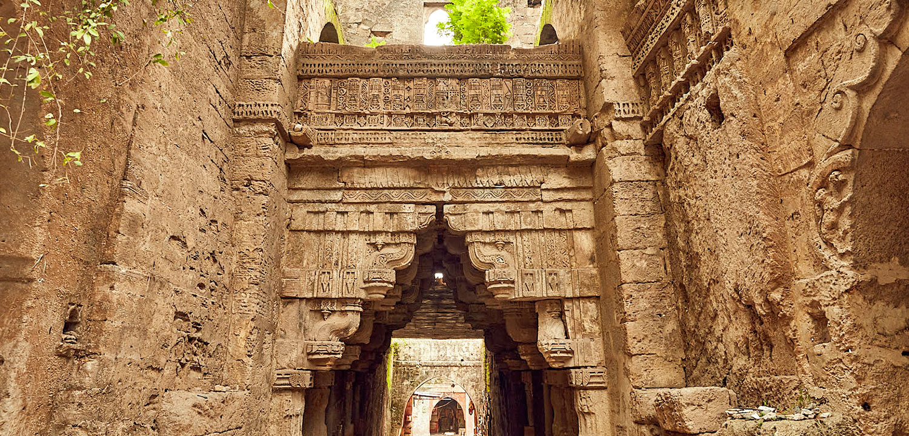

This ancient fort is believed to have been built in 319 BC by the Mauryan emperor Chandragupta, though it has been extended many times. In places, the ramparts reach 20m high. It’s been besieged 16 times, and legend has it that the fort once withstood a 12-year siege. The views over the city and east to Girnar Hill are superb, and within its walls, there is a magnificent former mosque, a set of millennia-old Buddhist caves and two fine step-wells. The fort has two fine step-wells both cut from solid rock. The circular, 41m-deep Adi Kadi Vav was cut in the 15th century and named after two slave girls who used to fetch water from it. Navghan Kuvo, 52m deep and designed to help withstand sieges, is almost 1000 years old and its magnificent staircase spirals around the well shaft. Look for the centuries-old dovecotes.
Brief History
Said to have been built in 319 BC, the fort was the architectural work of Chandragupta. But the fort changed many hands. Remnants of different rulers can be seen in some parts of the structure. For example, on the rampart above the gate is an inscription of Mandalika III, dated 1450. Another emblem is in the form of a 10 inch bore cannon of bell-metal - 17 feet long and 4 feet 8-inch round at the mouth. This gun was brought from Diu, where it was left by the Ottoman Turks when they were defeated in the Siege of Diu in the mid-16th century.
Best Time to Visit
The best time to visit is between November and February.

How to Get There?
By Road
Junagadh is accessible by ST and Private buses from other cities of Gujarat.
By Train
Two express trains run on the Ahmedabad-Veraval line.
By Air
The closest airport to Junagadh is Rajkot (103 km).